7210E66 R.R. REAR BUMPER
- Path
- Procedures > 72 PANELS AND FRAME > 7210 REMOVING REFITTING > 7210E external parts > 7210E66 R.R. REAR BUMPER
- Kind
- repair procedure (removal / refitting; the operation number is the code)
- Applies to
- all engines; all production periods
- Interactive page
- https://sloeber94.github.io/elrnDB-a156/en/#/3239056
Applies to: all engines; all production periods; only with equipment: Sedan
 Removing
Removing
 Refitting
RefittingPlace the vehicle on a lift.
Raise the vehicle.
5540A94 l/h or r/h number plate light (one) - r+r (left and right sides)
1. Working from both sides of the car, undo the outer bumper bolts.
2. Move the wheel arch (2a) slightly and undo the bolt (2b) fixing the front bumper.
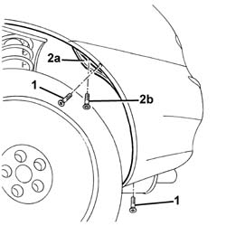
Applies to: all engines; all production periods; only with equipment: Sedan
1. Undo the bumper lower bolts.
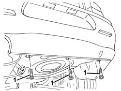
Applies to: all engines; all production periods; only with equipment: Sedan
Lower the vehicle.
7040B22 luggage compartment/load platform moulding - r+r
1. Working from both sides of the boot compartment, undo the nuts.
2. Remove the tail-light protections.
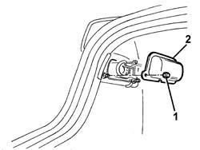
Applies to: all engines; all production periods; only with equipment: Sedan
1. Move the side trim.
2. Undo bumper support bolts (2a) and remove washers (2b). During refitting, new washers must be fitted.
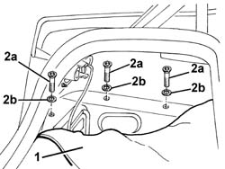
Applies to: all engines; all production periods; only with equipment: Sedan
1. Undo the upper bolts fixing the bumper.
2. Remove the bumper.
3. Remove the buffers if necessary.
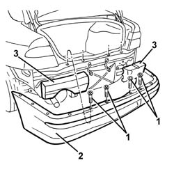
Applies to: all engines; all production periods; only with equipment: Sedan
Refitting
RemovingCheck that the bumper is undamaged.
1. If removed, refit the buffers.
2. Fit the front bumper.
3. Screw in the upper bolts fixing the bumper without tightening.
4. Tighten outer bolts (4a) and align the bumpers with the wing at the side (4b).
5. Tighten the upper bumper bolts.
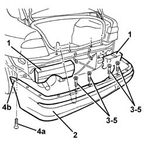
Applies to: all engines; all production periods; only with equipment: Sedan
Position the new washers and tighten the bumper side support bolts.
Tighten the lower bolts fixing the bumper.
Tighten the outer bumper bolts.
Refit the boot side trim.
Position the tail-light protection and secure with the nuts.
7040B22 luggage compartment/load platform moulding - r+r
5540A94 l/h or r/h number plate light (one) - r+r (left and right sides)
Remove the vehicle from the lift.
Applies to: all engines; all production periods; only with equipment: Station Wagon
Removing
RefittingPlace the vehicle on a lift.
Raise the vehicle.
5540A94 l/h or r/h number plate light (one) - r+r (left and right sides)
1. Working from both sides of the car, undo the outer bumper bolts.
2. Move the wheel arch (2a) slightly and undo the bolt (2b) fixing the front bumper.
Applies to: all engines; all production periods; only with equipment: Station Wagon
1. Undo the bumper lower bolts.
Applies to: all engines; all production periods; only with equipment: Station Wagon
Lower the vehicle.
7040B22 luggage compartment/load platform moulding - r+r
7040B15 (One), rear side trim mounting BRACKET left or right - R.R .
1. Open the side box.
2. Undo the side mount rear retaining bolts.
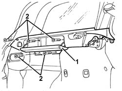
Applies to: all engines; all production periods; only with equipment: Station Wagon
1. Working from both sides of the load compartment, undo the nuts.
2. Remove the tail-light protections.
3. Unscrew the bolt.
4. Remove the mountings.
5. Move the side blind mounts slightly to one side.
6. Move the side trim slightly to one side.
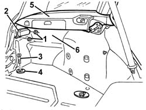
Applies to: all engines; all production periods; only with equipment: Station Wagon
1. Undo bumper support bolts (1a) and remove sealing washers (1b). Change the washers when refitting.
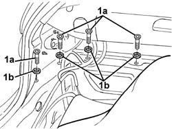
Applies to: all engines; all production periods; only with equipment: Station Wagon
1. Undo the upper bolts fixing the bumper.
2. Remove the bumper.
3. Remove the buffers if necessary.
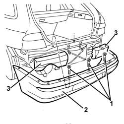
Applies to: all engines; all production periods; only with equipment: Station Wagon
Refitting
RemovingCheck that the bumper is undamaged.
1. If removed, refit the buffers.
2. Fit the front bumper.
3. Screw in the upper bolts fixing the bumper without tightening.
4. Tighten outer bolts (4a) to align the bumper to the wing at the side (4b).
5. Tighten the upper bumper bolts.
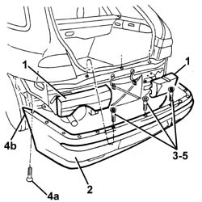
Applies to: all engines; all production periods; only with equipment: Station Wagon
Fit the new washers and tighten the bumper side support bolts.
Tighten the lower bumper bolts.
Tighten the bumper outer bolts.
Refit the load compartment side trim and the blind side mounts.
Tighten the screws.
Position the mountings and secure them using the bolts.
Position the tail-light protections and secure with nuts.
7040B15 (One), rear side trim mounting BRACKET left or right - R.R .
7040B22 luggage compartment/load platform moulding - r+r
5540A94 l/h or r/h number plate light (one) - r+r (left and right sides)
Remove the vehicle from the lift.
Topics linked from this page (3)
- 5540A94 l/h or r/h number plate light (one) - r+r
- 7040B15 (One), rear side trim mounting BRACKET left or right - R.R .
- 7040B22 luggage compartment/load platform moulding - r+r